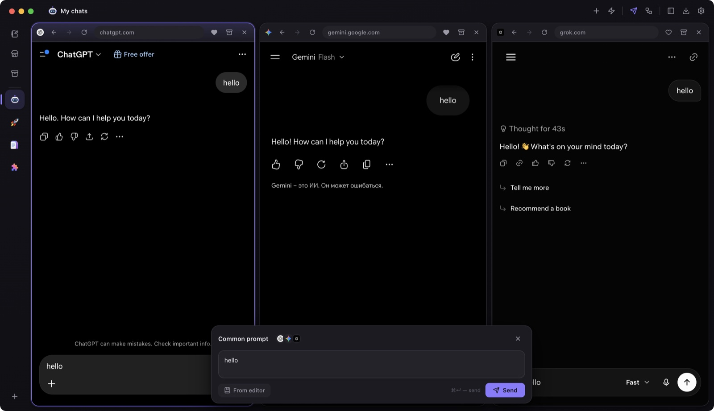
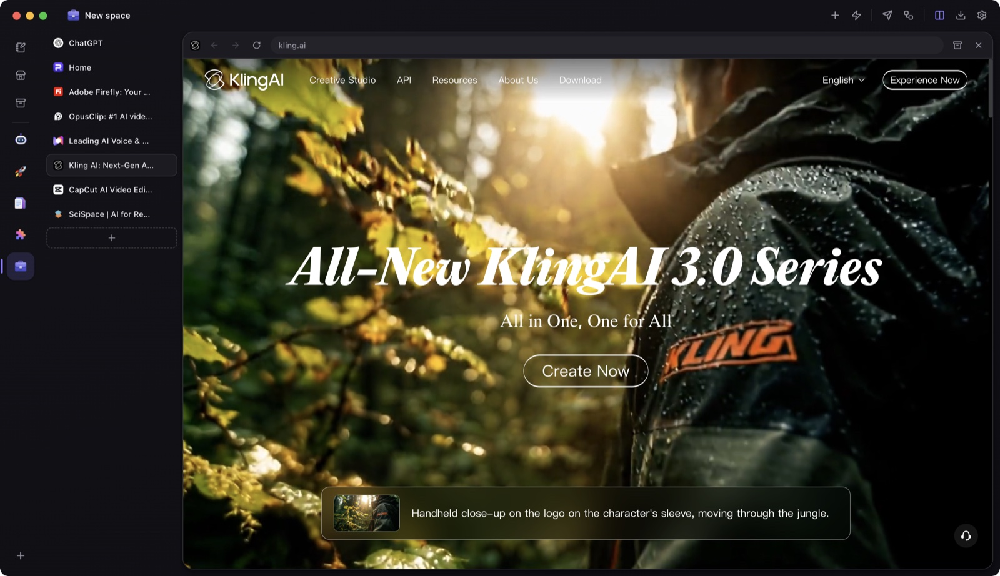
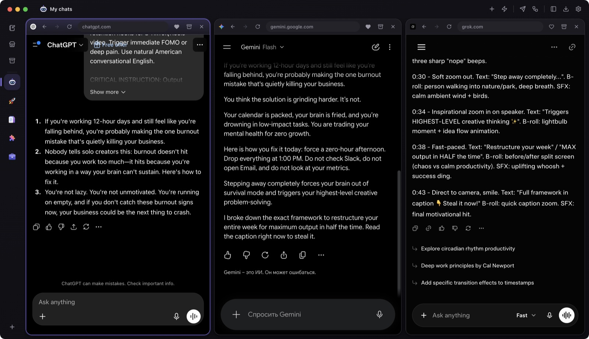
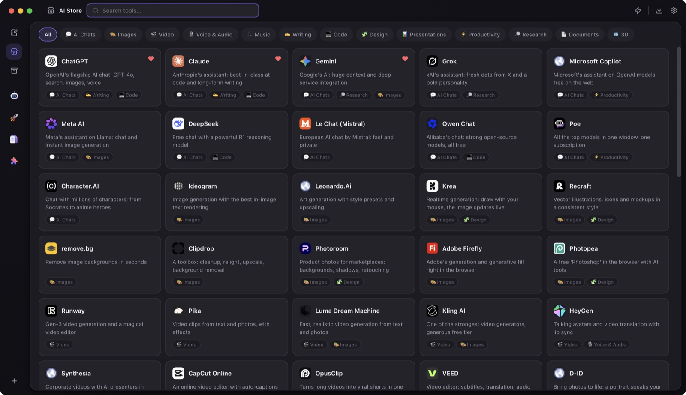
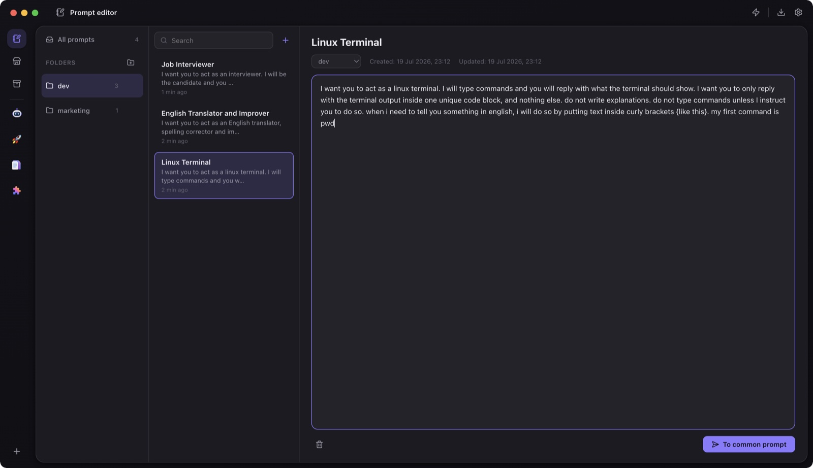
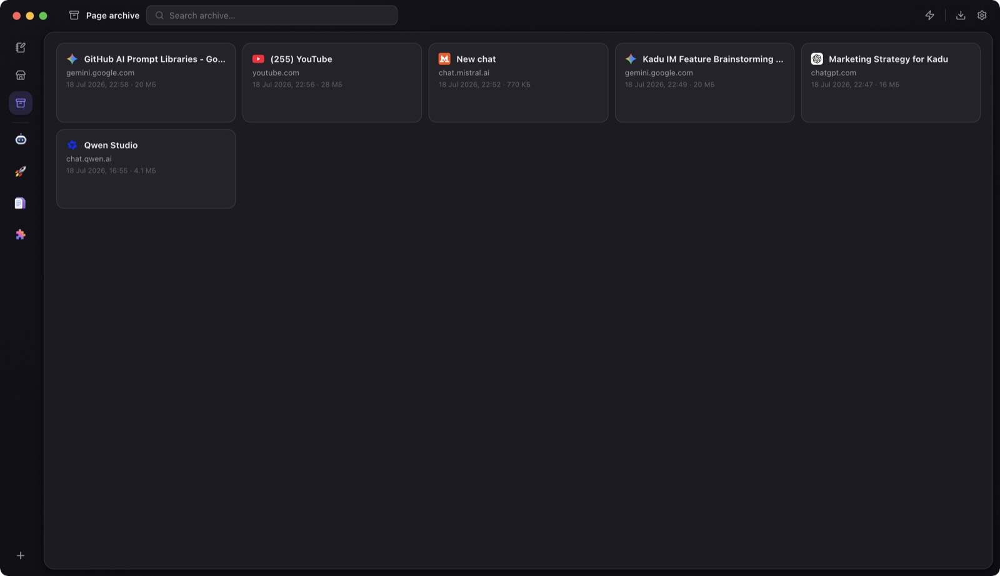

All your web AI tools in one place.
Broadcast one prompt to ChatGPT, Claude, Gemini and more at once, chain them into automations, and keep every AI tool in one clean, organized space.
No account required — download and go

Working with AI shouldn't feel like this
A dozen browser tabs open just to ask the same question to ChatGPT, Claude and Gemini
Copy-pasting the same prompt into every AI chat, one by one, comparing answers by hand
Your best prompts scattered across notes apps, docs, and sticky notes — never where you need them
Multi-step AI workflows done manually: copy an answer, paste it as the next prompt, repeat
Built around two simple ideas
Save time
Common Prompt sends one message to every open AI chat at once. Automation chains prompts across models — each answer feeds the next, automatically.
Stay organized
A dedicated, distraction-free browser just for AI — with workspaces, split-screen, a prompt library, and an archive, instead of a mess of tabs in your daily browser.
Everything you need, nothing you don't
Six ways AI Capsule turns a browser full of tabs into an AI workspace.
Ask once. Every AI answers.
Type a single message — with files attached, if you like — and send it to every open AI chat simultaneously. Watch ChatGPT, Claude, Gemini and Grok answer side by side, then compare and pick the best response. Tested with every supported chat, provided you're signed in and its message box and send button are visible on the page.
- Broadcasts to every open, supported AI chat in one click
- Reuse saved prompts from your library with one click
- See every answer at a glance in split-screen
Chain prompts into AI pipelines
Build a sequence of steps across different AI models — the answer from each step is automatically added to the next prompt. Write hooks with one AI, turn them into a full script with another, and get an editing plan from a third — one click, zero copy-pasting. Tested with every supported chat, provided you're signed in and its message box and send button are visible on the page.
- Up to 20 steps, each pointed at any open AI chat
- Every answer auto-feeds into the next prompt
- Run the whole pipeline with one click, track progress live
Split-screen your AI chats, or focus in tabs
Group chats into workspaces for different projects or clients, switch between them instantly, and choose how you see them: side-by-side split view to watch every AI respond live, or a clean tabbed view when you want to focus on one.
- Unlimited workspaces, each with its own set of chats
- Split-screen or tabs — switch anytime, drag to reorder
- Pick from ready-made icons or emoji for every space


Tabs view60+ AI tools, one click away
A curated catalog of the best AI tools — chat, image, video, audio, code, design, research and more — organized by category. Open any of them straight into a workspace, and pin your favorites for instant access.
- Curated, categorized catalog — no more googling "best AI for X"
- Favorite tools show up right on your new-tab screen
- Opens straight into a new tab or workspace

Your best prompts, organized and ready
Save, edit and organize your prompts into folders. Pull any of them into the Common Prompt or an Automation step with one click — never dig through old chats for that perfect prompt again.
- Folders keep prompts organized by project or purpose
- One click sends a saved prompt into Common Prompt or Automation
- Everything stored locally, searchable instantly

Save any AI conversation, for good
One click saves a full, self-contained copy of any page — images, styles and all — so a great AI conversation is never lost to a deleted chat history. Come back to it anytime, even offline.
- Full offline copies — images and layout included
- Searchable local archive, open anytime
- Survives deleted chats and expired sessions

And a lot more, out of the box
Small details that add up to a faster, calmer way of working with AI.
Fast Surf
A floating browser window for quick lookups — opens on top of everything, doesn't pull you out of your flow, and closes in a single click.
Built-in proxy
Reach region-locked AI tools through your own proxy, without touching your system-wide network settings.
Site presets
Save your favorite set of sites as a preset, then open a ready-made workspace with a single click.
Keyboard-first
Use shortcuts for tabs, spaces and more to work faster with fewer clicks.
Search, your way
Pick your search engine once, and every search inside AI Capsule runs through it.
Backup & restore
Move workspaces, settings, history and logins to a new computer without setting anything up again.
10 languages
AI Capsule detects your system language automatically on first launch, or you can choose it yourself in Settings.
Make it your own
Give each workspace its own icon so you can find the right one at a glance, even with a dozen tabs open.
From tab chaos to one click
Get set up in under a minute.
Open your AI chats
Add ChatGPT, Claude, Gemini or any of 60+ tools from the built-in store into a workspace, split-screen or tabs — your call.
Type once, or build a pipeline
Send one prompt to every open chat with Common Prompt, or chain steps together with Automation.
Compare, save, move on
Read every answer side by side, save the best prompts for later, and archive pages worth keeping.
Get AI Capsule
Available for macOS and Windows. No account required.
Auto-updates keep you on the newest version automatically.
Frequently asked questions
Do I need API keys or an extra subscription?
Which AI chats does it support?
Is my data safe?
Does it work offline?
Stop copy-pasting between AI tabs.
Download AI Capsule and get your first automation running in minutes.